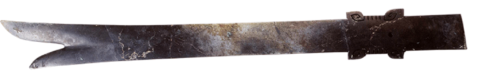
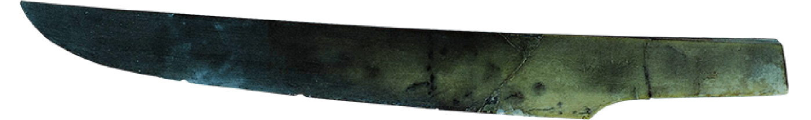
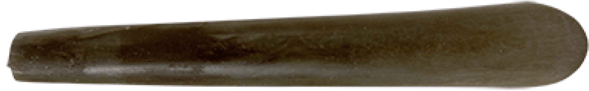

玉璋
；《周礼》记载有：“璋，以祀山川。”璋可以作为古代祭山的礼器，古人认为山是地面上距离天最近的地方，祭山的目的就是为了通天，所以古代“天山之祭”是最重要的祭祀活动，可见商玉边璋主要功能就是用于祭山。 而商玉边璋上从天而降的大手代表天神接受了人们的祝祷，伸出拇指按在山腰上，是要赐福于下界的表示。

玉刀
三星堆玉刀的材质通常为软玉，与金沙遗址所出土的玉器材质类似，很有可能来自同一时期 。这些玉刀的发现，不仅展示了古蜀文明的高超技艺，也为我们提供了研究古蜀文明提供了宝贵的资料。玉刀的锋利刀刃也许带有一定的实用作用，但从玉质来看，它们通常作为礼器，没有实用价值 。

玉凿
三星堆玉凿的制作工艺精湛，器身光滑、刃部细腻，显示出当时工匠对玉料的珍惜以及高超的加工技艺。玉凿的形状和构造多样，包括凹刃玉凿等，这些形制的玉凿在三星堆文化中具有代表性。玉凿的精美工艺和大量数量表明，玉凿在当时社会中具有重要的地位和价值，与大禹治水工具的重要性相当。